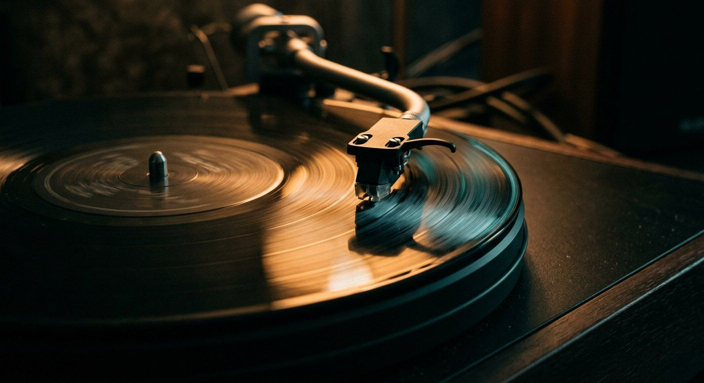

Best Turntables for DJs in 2026: Technics, Pioneer, Audio-Technica Compared
Technics SL-1200MK7 vs Pioneer PLX-500 vs Audio-Technica AT-LP120XBT-USB — prices, drive types, and torque specs for the best DJ turntable in 2026.

Disclosure: This page uses affiliate links. We may earn a commission at no extra cost to you. Full disclosure →
Turntables are essential for DJs who want precise pitch control, DVS compatibility with Serato and rekordbox, or simply the unmatched tactile feel of vinyl. We compared five models across price, drive type, torque, and real-world performance.
Turntable Comparison Table
| Model | Price (USD) | Drive Type | Torque | Best For | Buy |
|---|---|---|---|---|---|
| Technics SL-1200MK7 Top Pick | $699 | Direct Drive | 2.7 kgf·cm | Professional DJs & Vinyl Enthusiasts | Search Technics SL-1200MK7 on Amazon → |
| Audio-Technica AT-LP120XBT-USB | $199 | Direct Drive | 5.3 g·cm | Beginners & Hobbyists | Search Audio-Technica AT-LP120XBT-USB on Amazon → |
| Pioneer DJ PLX-500 | $229 | Direct Drive | 3.5 kgf·cm | DVS/Club Practice | Search Pioneer DJ PLX-500 on Amazon → |
| Reloop RP-7000 MK2 | $499 | Direct Drive | 2.6 kgf·cm | Advanced DJs & Producers | Search Reloop RP-7000 MK2 on Amazon → |
| Numark TTUSB | $149 | Belt Drive | 2.5 kgf·cm | Entry-Level / Vinyl Digitizing | Search Numark TTUSB on Amazon → |
Top Pick: Technics SL-1200MK7Detailed Review
The Technics SL-1200MK7 ($699) is the industry benchmark that has set the standard for professional DJ turntables since 1972. The 2024 MK7 revision keeps the legendary direct-drive motor — 2.7 kgf·cm of torque reaching 33⅓ RPM in 0.7 seconds — while adding a coreless motor design that nearly eliminates cogging for smoother pitch transitions.
Live price and stock at the retailer. Prices move week to week — we date every figure in this guide.
Build quality: Die-cast aluminum platter (2.5 kg) with a thick rubber mat reduces vibration below the noise floor of most phono preamps. The adjustable tonearm accepts cartridges from Ortofon Concorde DJ to Shure M44-7 without shimming. The reinforced plinth dampens feedback on stage monitors up to 105dB SPL.
Sound quality: The SL-1200MK7 delivers precise frequency response across 20Hz–20kHz. The direct-drive system's wow and flutter spec is 0.025% WRMS — accurate enough for audiophile critical listening as well as DVS timecode tracking. Beat-matching by ear is noticeably more stable than on belt-drive or lower-torque alternatives.
DVS compatibility: Pairs with Serato DJ Pro, rekordbox DVS, and Traktor Scratch Pro 2 out of the box when connected through a compatible DVS audio interface. The platter's rotational accuracy ensures timecode tracking rarely drops, even during aggressive scratching or pitch-bending.
Verdict: At $699, the SL-1200MK7 is the right choice for anyone preparing for club gigs or serious vinyl DJing. For home-only practice, the $229 Pioneer PLX-500 covers 90% of use cases at a third of the price.
Pioneer DJ PLX-500Best Value for Club Practice
The Pioneer DJ PLX-500 ($229) is the most club-realistic turntable under $300. Its direct-drive motor, built-in phono preamp, and +/−8% pitch range make it ideal for learning Pioneer's tracking feedback before stepping into a club booth. It lacks the SL-1200's build quality — the plastic plinth resonates slightly at high volumes — but for home DVS setups it's a strong value.
Live price and stock at the retailer. Prices move week to week — we date every figure in this guide.
Audio-Technica AT-LP120XBT-USBBest Beginner Turntable
The AT-LP120XBT-USB ($199) adds Bluetooth and USB output to the proven LP120 platform. You can connect it wirelessly to studio monitors, stream to headphones, or capture vinyl directly to your DAW via USB. The pitch control range is +/−10%. Build quality is good for the price, though the tonearm anti-skate and counterweight require 10 minutes of calibration out of the box.
Confirm current stock, return policy, and whether the listing matches the exact model recommended here.
Our Final Recommendation
Shop on Amazon
Free Prime shipping · Easy returns · Best prices.
Also on zZounds
Flexible financing · No credit check · 45-day price guarantee.
Complete the turntable setup
A turntable is one piece of a working setup. Start with the part that is actually missing from your rig and open that guide.
Cartridges and styli
DJ-grade cartridges, stylus replacement, and tracking force — the recurring cost every turntable owner budgets for.
Open →Signal pathBest DJ mixers
Phono input, channel routing, and level headroom — from home practice to the club back.
Open →Vinyl controlVinyl scratch and DVS software
Serato, Traktor, and rekordbox DVS setups compared by hardware support and workflow fit.
Open →Deck skillBeatmatch without Sync
Pitch control, phrasing, and transitions on real decks — the skill turntable work builds.
Open →Before you buy: five quick checks
Turntables and cartridges are long-term purchases. These checks decide whether the deck will still be serviceable in ten years.
Frequently Asked Questions
What's the difference between direct drive and belt drive turntables?
Direct drive connects the motor directly to the platter — faster start-up, higher torque, better for DJing and scratching. Belt drive uses a rubber belt, producing quieter operation but slower engagement — suited for audiophile listening, not live performance.
Which turntable is best for beginner DJs in 2026?
The Audio-Technica AT-LP120XBT-USB ($199). Direct drive, USB output for vinyl digitizing, Bluetooth, and +/−10% pitch — everything a beginner needs without the $699 Technics price tag.
Can I use a turntable with Serato or rekordbox DVS?
Yes. You need a timecode vinyl record and a compatible DVS audio interface (e.g. Rane SL 2, $299). The Pioneer PLX-500 ($229) has a built-in phono preamp that simplifies the signal chain. The Technics SL-1200MK7's precise tracking makes it the most reliable DVS timecode reader.
How do I maintain a DJ turntable for consistent performance?
Clean the stylus with a dry brush after every session. Check tonearm tracking force every few months (typically 2–4g per cartridge specs). Wipe the platter mat to remove static. For belt-drive units, inspect the belt annually for stretching or cracking.
Is the Technics SL-1200MK7 worth $699 for DJs in 2026?
Yes, if you play club gigs — most professional booths stock Technics SL-1200s. Learning on the MK7 means zero adjustment when performing live. For home practice only, the AT-LP120XBT-USB at $199 is sufficient.